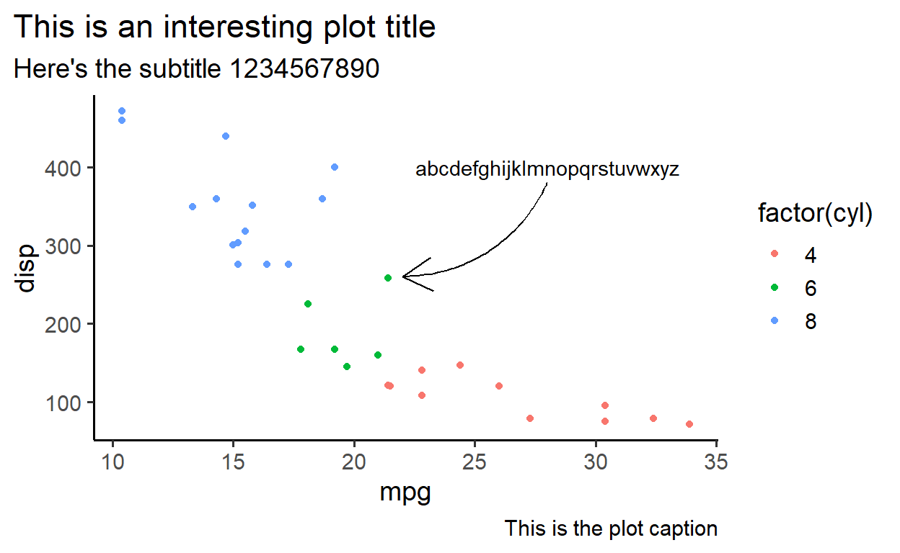
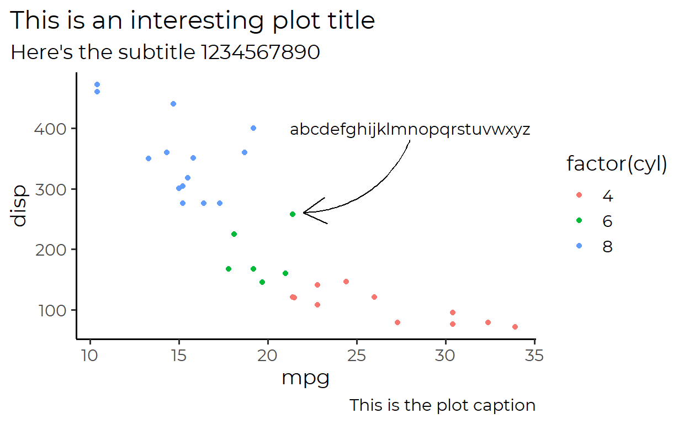
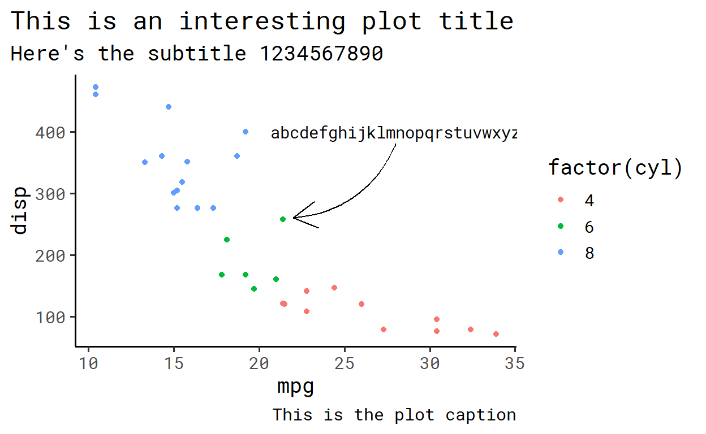
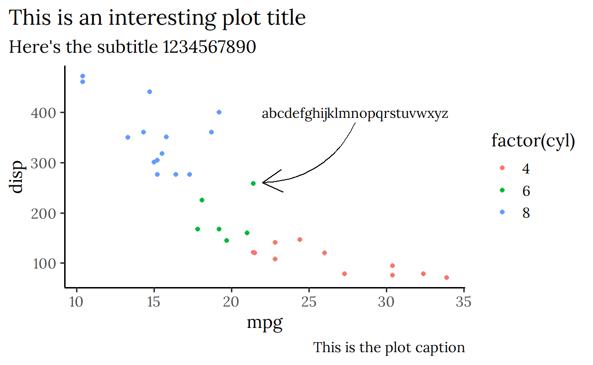
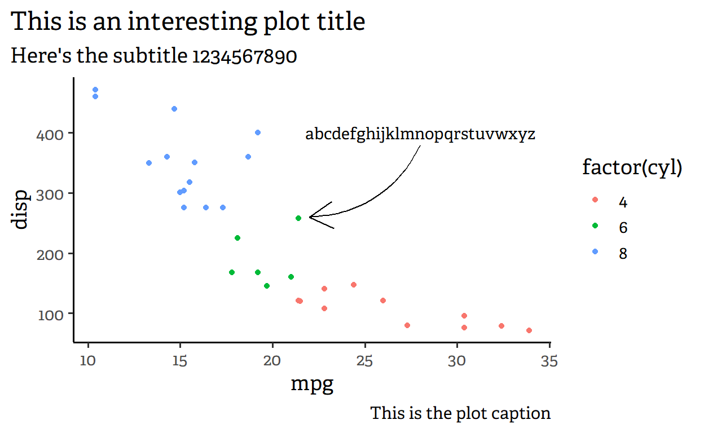
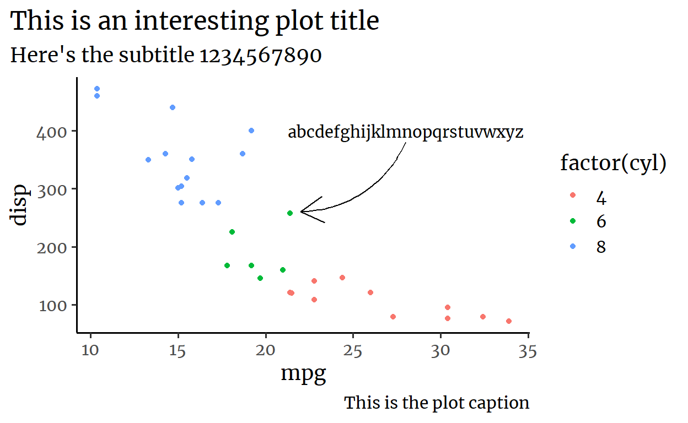

Fonts for graphs
June Choe ![]()
For the last few weeks I’ve been reading about and experimenting with fonts for data visualization in my spare time.1 Out of that, I have found a couple fonts that I really like and wanted to do a small showcase of them here.
These fonts are all free and available for download at Google Fonts.2 Note that not only are they all large font families that come with many different styles, you can also adjust various theme settings like lineheight in {ggplot2}, so what I’m showing here isn’t the full extent of what you can make with these fonts.
Arial
It’s the default. It’s dull. It’s just here for comparison.

Montserrat
Simple design that can handle long lines of text. I like it for minimal plots.

Roboto Mono
Monospaced member of the Roboto family. Very easy to read.

Futura Bk BT
A slender and bold member of the Futura family. Looks nice even in larger sizes.
Barlow
Also a slender font like Futura, but this has nicer ’j’s

Adelle
A serif font that doesn’t go overboard. I use it a lot for short paragraphs.

Merriweather
Similar to Adelle, but has a bit more pronounced hooks

Misc.
Why spend 3 minutes copy-pasting code when you can spend an hour automatizing it?
This was my first time using dynamic Rmarkdown reporting. The plots above and the text descriptions that went with them were generated in a for loop, which I learned about here.
Here is the single chunk of code that made this possible:
library(ggplot2)
library(extrafont)
knitr::opts_chunk$set(fig.width = 7, dpi = 600)
theme_set(theme_classic(base_size = 14))
favorites <- c(
"Arial" = "It's the default. It's dull. It's just here for comparison.",
"Montserrat" = "Simple design that can handle long lines of text. I like it for minimal plots.",
"Roboto Mono" = "Monospaced member of the Roboto family. Very easy to read.",
"Futura Bk BT" = "A slender and bold member of the Futura family. Looks nice even in larger sizes.",
"Barlow" = "Also a slender font like Futura, but this has nicer 'j's",
"Adelle" = "A serif font that doesn't go overboard. I use it a lot for short paragraphs.",
"Merriweather" = "Similar to Adelle, but has a bit more pronounced hooks"
)
for (font in names(favorites)) {
cat("\n\n## ", font, "\n\n")
cat("", favorites[font], "\n\n")
plot <- qplot(data = mtcars, mpg, disp, color = factor(cyl)) +
annotate("text", 28, 400, label = paste(letters, collapse = ''), family = font) +
geom_curve(aes(x = 28, y = 380, xend = 22, yend = 260),
color = 'black', curvature = -.3, arrow = arrow(), show.legend = FALSE) +
labs(title = "This is an interesting plot title",
subtitle = "Here's the subtitle 1234567890",
caption = "This is the plot caption") +
theme(text = element_text(family = font),
plot.title.position = 'plot')
print(plot)
}
Footnotes
Citation
@online{choe2020,
author = {Choe, June},
title = {Fonts for Graphs},
date = {2020-09-06},
url = {https://yjunechoe.github.io/posts/2020-09-06-fonts-for-graphs/},
langid = {en}
}